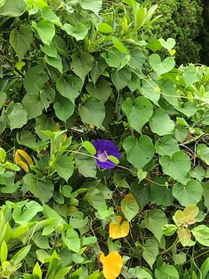
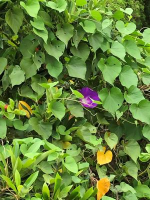

うるがいの話 ある日
最新: 琉球朝顔の花の色うるがいとは 前提知識です
カニの画像をクリックすると『うるがいの話』サイトを表示します|
|
【うるがいの話】 うるがい(ｳﾙｶﾞｲ urugai)とは、『もずくがに』の名前でとても大きくなります。 |
|---|---|
|
|
【Got cat カミマヤーの話】 たながー（ﾀﾅｶﾞｰtanagaa）とは手長えびのことで、何種類かあり大きいのは車 エビぐらいになります。 |

|
【ぶながぁの話】 ぶながー(bunagaa)とは、赤い髪の毛、赤い身体、そして身長は１ｍ２０ｃｍ ぐらい、川の蟹を食べているの目撃された。場所は沖縄県国頭郡大宜味村のと ある村僕の隣近所に住んでいる爺さんから、聞いた話です。 |
|
|
【ギーマの話】 ギーマ(giima)とは、山原の里山に咲くスズランに似た、 花を付けます。実は食べられます、 気が付くと口の周りが紫になっています。 |
2021年10月25日 (月）琉球朝顔の花の色
16:32
 
あさがおの色が朝と夕方で変わる理由としぼむ時間が違うのはなぜ？。アサガ
オの花の色素は、アントシアニンといって、「pHの変化に対応して敏感に色調
を変える性質」があり、pHの低い酸性で赤色、中性で紫色、pHの高いアルカリ
性で青色になります。アサガオの花びらは、何層もの細胞でできていて、色が
付いているのは、表と裏側。それぞれ一番外側の細胞のみです。花が咲くとき
に、この細胞の中にある、色素の入っている「液胞」という袋のpHだけがあが
ります。そして、咲いてる間に細胞内でpHがかわるものの、しぼむのが近づく
に従って元気がなくなるのでpHを上げることができなくなります。さらに、細
胞と細胞を分けている膜に穴があいて、液が混じり合うようになります。そう
すると、pHが全体としては下がってしまい、花びらの色は赤っぽくなります。
なるほど、分かりました。同じ琉球朝顔の色が、青っぽく見えたり、赤くなっ
たりするのでは気づいてはいたが、窓から見えた上の写真の青い花が、夕方に
赤になっているのが分かったのは今、気付く。